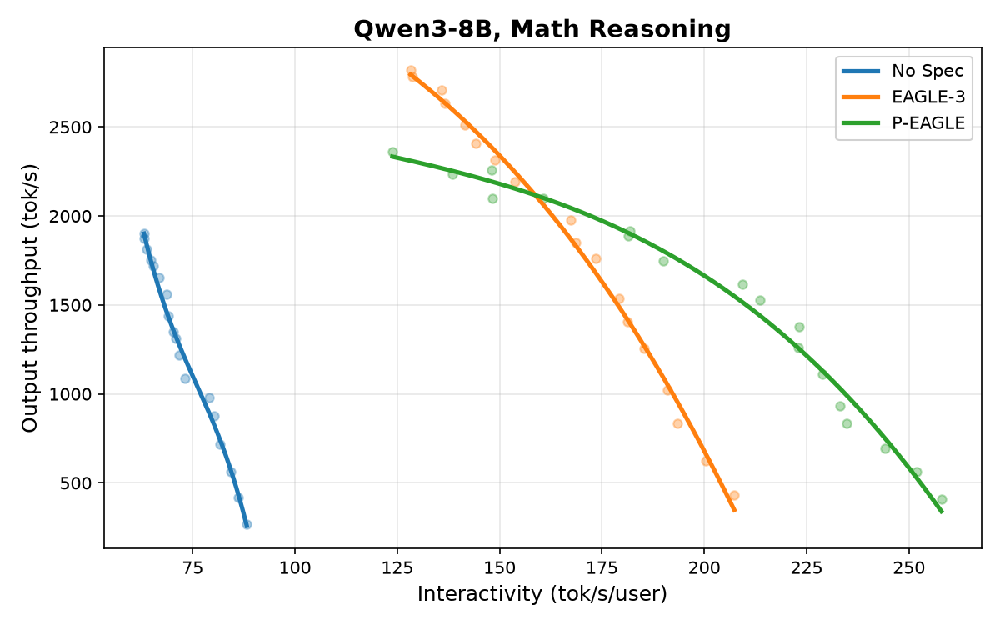
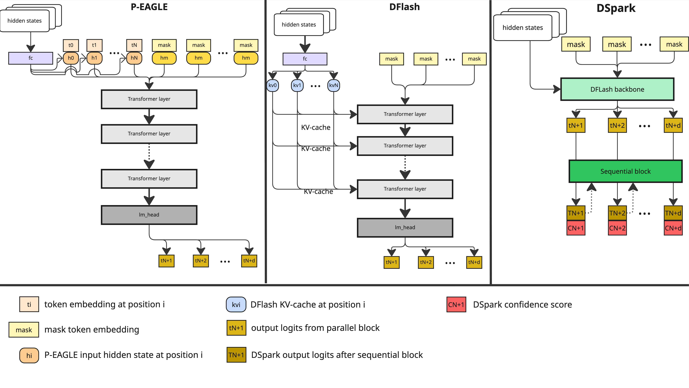

投机解码（Speculative Decoding）已成为大模型推理的核心优化技术：通过一次验证多个候选token来缓解显存带宽瓶颈。但传统投机框架面临一个结构性天花板：自回归草稿必须逐token生成，每个候选token一次额外前向。vLLM和Speculators开源项目正式全线支持三种并行草稿算法：P-EAGLE、DFlash和DSpark。 并行草稿从根本上消除了草稿阶段的顺序执行，一次前向预测整个候选块，草稿延迟与投机长度完全解耦。
EAGLE和MTP框架代表了投机解码的重要范式转变：草稿器可以直接利用验证模型的内部隐藏状态，大幅提升token接受率。但EAGLE-3等先进迭代仍受制于根本性约束：自回归草稿。 要生成一串候选token，草稿架构必须顺序执行，每个额外token一次独立前向。
这种自回归设计在生产中带来两个主要权衡。模型大小受限： 草稿成本随投机长度线性增长，草稿模型必须保持极轻量级以避免消耗验证带来的加速。操作调优复杂： 线性扩增严重限制了实际可草稿的token数。最优投机长度K变成需要工程团队根据具体用例和实时负载持续调整的敏感参数。
并行草稿从根本上重构了这一权衡：从草稿阶段完全消除顺序执行。不是循环逐token生成，而是并行预测整个候选块。 通过将草稿阶段扁平化为一次前向传递，提案生成的延迟与投机token数解耦。
这带来两个关键优势。表达能力增强： 草稿模型只运行一次每块，开发者可以使用更大、更鲁莽的草稿架构。参数调优简化： 草稿成本与块长度解耦，消除了基于负载波动超调投机参数的操作负担。Medusa和PARD是早期的探索：P-EAGLE、DFlash和DSpark在此基础上将并行执行与深度验证器状态条件化相结合，这正是EAGLE成功的关键洞察。
P-EAGLE直接建立在EAGLE的根基上：使用验证模型的隐藏状态作为输入特征。但不同于EAGLE的顺序consumption，P-EAGLE将这些特征同时映射到多个未来位置，一步并行输出整个候选token序列。
一个共享挑战是训练。任何并行草稿器都必须在训练序列的每个token位置执行next-K预测。对于长度N和前瞻窗口K，天真地计算完整矩阵的损失会使得内存和计算成本不可控。P-EAGLE实现了草稿块稀疏化：按衰减率沿前瞻维度(K)丢弃token，将优化集中在最关键的下一个token，从损失计算中修剪远距离未来位置。

DFlash以不同方式路由验证器特征。不是将隐藏状态作为标准输入馈入，而是将它们投影并直接注入草稿模型的KV-Cache中。这使草稿模型的注意力机制紧密条件化于验证器的精确状态，无需扩展输入序列长度，使其能够通过块扩散生成高度精确的候选块。

训练方面，DFlash实现序列长度稀疏化：不是计算序列上每个token位置的块损失，而是沿时间线选择随机锚点，仅在这些交叉点计算块预测。这保留了GPU内存同时维持代表性覆盖。
DSpark在DFlash骨架上叠加了两项创新。首先，增加轻量级自回归校正头，使未来token能更强地条件化于过去的token：兼顾并行生成吞吐与自回归精炼的顺序一致性。

其次，DSpark引入置信度头： 在候选token到达验证器前对其评分，选择性转发仅那些可能被接受的token，减少浪费的验证计算。并行草稿可以廉价的生成大量草稿，但验证器必须处理所有：DSpark的设计直接解决了这个下游瓶颈。
博客提供了三组实测对比（图1）。Qwen3-8B + P-EAGLE on 1×A100在GSM8K数学推理上相比EAGLE-3显著改善。Qwen3-30B-A3B + DFlash on 2×A100在HumanEval编码上全面超越。Gemma-4-31B-it + DSpark on 2×A100同样优于EAGLE-3。

三种模型、三种算法、两种任务、不同硬件。并行草稿在所有配置下都显示出优于EAGLE-3的表现。vLLM团队强调：性能会因模型、任务和硬件配置而不同，建议社区在自己的工作负载上基准测试。
将SOTA并行草稿算法集成到生产环境中需要稳定、优化的基础设施栈。Speculators仓库提供了统一生态来训练和评估新一代模型，与vLLM完全集成。启动并行投机引擎只需在初始化时传递配置参数：
``` vllm serve Qwen/Qwen3-30B-A3B \ --tensor-parallel-size 2 \ --reasoning-parser qwen3 \ --speculative-config '{ "model": "RedHatAI/Qwen3-30B-A3B-speculator.dflash", "num_speculative_tokens": 7, "method": "dflash" }' ``` 通过从单token生成迁移到块级并行草稿，整个推理管线实现全面并行化：最大化硬件利用率，持续无损加速。投机解码通过拒绝采样确保输出质量与标准解码数学一致。
参考：https://vllm.ai/blog/2026-07-28-speculators-parallel-drafting